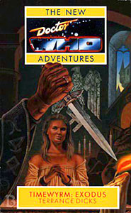

|
Timewyrm: Exodus
|
BASIC PLOT DOCTOR COMPANIONS MATERIALISATION CIRCUIT Pg 101 An alleyway in Germany, 1923. Pg 110 A Nuremberg rally, Germany, 1939. Pg 217 A mountain ledge, Felsennest, May 1940. Pg 213 Three feet above the tower at Drachensberg. Pg 213 The Festival of Britain, 1951, unaltered Earth. PREPARATORY READING CONTINUITY REFERENCES Pg 8 "The Doctor scowled at the photograph. 'I never trusted those Windsors!'" The Windsors in question are King Edward VIII and his wife, Wallis Simpson. The Doctor goes on to comment that 'He was a vain and silly man', presumably knowing this since he met them in Players. Pg 9 "Well there was that meddling Monk of course" The Time Meddler. Pg 30 "Put that thing away, this isn't the OK Corral" The Gunfighters. Pg 39 "Herr Doktor Johann Schmidt" The Doctor sometimes goes undercover as Doctor John Smith, the first instance in "The Wheel in Space". This is merely the name's German version. Pg 46 "We follow the time-path indicator here" Timewyrm: Genesys. Pg 48 "Sleep is for tortoises." The Talons of Weng-Chiang. Pg 49 "Ace was being chased down endless metal corridors by a huge black swastika-wearing Dalek." The first mention of Daleks in the New Adventures, unusual because the editors technically didn't have the right to include any in the series. The Daleks were originally Terry Nation's response to the Nazis, making Ace's dream quite appropriate. There's a similar linking in Just War. Pg 66 "The Doctor began summoning up certain mind-protection techniques he'd learned as a young man on Gallifrey from a hermit who lived on top of a mountain. He remembered [...] a daisy that seemed to hold the secret to existence." K'Anpo Rinpoche (Planet of the Spiders), The Time Monster. Pg 86 "I've got some Sisterhood salve back in the TARDIS somewhere" The Sisterhood of Karn manufactures a rejuvenating salve useful for traumatic regenerations in Time Lords. Pg 87 "The Doctor turned his grey eyes on her in what Ace always thought of as the 'look'." This comes from the novelisation of Remembrance of the Daleks. Pg 89 "As a matter of fact, I was once in grave danger of being washed down the plughole." Planet of Giants. Pg 90 "The Doctor slipped behind the struggling guard, draped an affectionate arm around his shoulders, and closed powerful fingers on a pressure-point." The Doctor also does this in Battlefield and Survival. "The Venusian nerve pinch induces short term amnesia" The 3rd Doctor favoured Venusian martial arts. Pg 92 "The bullet-clips of two machine pistols, emptied into his body at close range, would shatter both his hearts and kill him just as surely as they would any human." This is not unlike what eventually happened to Patience in Cold Fusion. Pg 93 Another reference to the annoying hermit-up-a-hill from The Time Monster. Pg 97 "The Doctor was hunched over the time-path indicator studying the bright green trace." From The Dalek Masterplan and Timewyrm: Genesys. Pg 99 "Dr Solon's Special Morbius Lotion." The Brain of Morbius. Pg 100 "You didn't take O-level Cheetah either." Survival. Pg 117 The Doctor uses a Stattenheim remote control to conceal the TARDIS. First heard of in The Mark of the Rani, the Rani had remote control of her TARDIS. The 2nd Doctor obtained one in The Two Doctors, something of a mystery as the 6th Doctor didn't have one. Pg 129 "I was unpaid scientific adviser to a Government security organisation." The UNIT years, during the seventies. Or was it the eighties? But see Continuity Cock-Ups. Pg 134 "The results of that interference could spread like ripples from a stone thrown in a pond." Remembrance of the Daleks. Pg 156 "The man took the card and produced a pair of round glasses with incredibly thick lenses." We've seen this sort of thing before in The War Games. Pg 160 "Burning petrol through a letterbox." What happened to Manisha, as we learned in Ghost Light and the novelisation of Remembrance of the Daleks. Pg 167 "He was engaged in a heated argument with President Borusa and Lady Flavia" Borusa first appeared in The Deadly Assassin. Chancellor Flavia first appeared in The Five Doctors. Pg 180 "What had he done with his sonic screwdriver?" The sonic screwdriver's first appearance was in Fury from the Deep and despite being destroyed in The Visitation returns in the NAs and is subsequently seen again in the telemovie. "Eventually the Doctor came up with a Gallifreyan Army Knife of the kind issued to the Capitol Guard. On it was engraved 'Property of Castellan Spandrell.'" The Gallifreyan Army Knife was invented here, but is seen later in other Terrance Dicks novels. Spandrell appeared in The Deadly Assassin. Pgs 181-182 A brief plot summary of The War Games was, of course, inevitable somewhere in the course of this book. Pg 185 "Well, I tried tall and dignified, and all teeth and curls, but it didn't really suit me." The third and fourth Doctors, and specifically the description of the latter in The Five Doctors. Pg 186 "His own third regeneration had been caused by a massive dose of radiation." Planet of the Spiders. "The regeneration aborted." Although invented here, aborted regenerations are mentioned in other Terrance Dicks' novels, including Warmonger. Pg 187 "So he had a quiet word with his friends in the Celestial Intervention Agency" First mentioned in The Deadly Assassin. "He tried for immortality as well, and got forced into permanent retirement." The Five Doctors. Pg 194 "You remember my SIDRATS, Doctor?" The War Games. Pgs 222-223 "Ace shuddered, remembering the clutch of icy metal fingers in her heart." Timewyrm: Genesys. OLD FRIENDS AND OLD ENEMIES Kreigsleiter, aka The War Chief. The War Lords. NEW FRIENDS AND NEW ENEMIES Lt Anthony Hemmings, who reappears in Timewyrm: Revelation and Happy Endings. His first name is given on page 15; it changes between this and Revelation, but the error is rectified in Happy Endings. Hitler, Goering, Himmler, Goebbels, Albert Speer and Martin Bormann.
CONTINUITY COCK-UPS PLUGGING THE HOLES [Fan-wank theorizing of how to fix continuity cock-ups] FEATURED ALIEN RACES The War Lords. FEATURED LOCATIONS Germany, 1923. Germany, 1939. Felsennest, May 1940. The Festival of Britain, 1951, unaltered Earth. IN SUMMARY - Robert Smith? |
|
 |